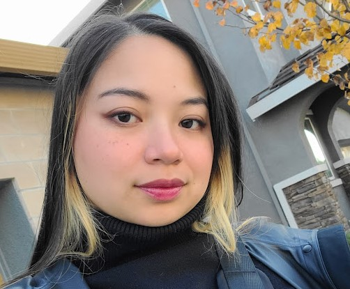

About Us
Meet the team.

Angelo Angelidis
Documentation
Educational Qualifications
Professional Skills
Technical Skills
Awards/Recognition
Work Experience

Steven Inouye
Back-End Developer
Educational Qualifications
Professional Skills
Technical Skills
Awards/Recognition
Work Experience

California State University, Sacramento (January 2023 - Present)
My-Le’s (September 2022 - December 2022)
Carrington College (March 2019 - December 2020)
Strong customer service orientation and client conflict resolution
Highly motivated, quick learner, and a team player
Experienced in managing efficient workflow and improving clinic procedures
Confident in animal handling, restraint, and sedation procedures
Skilled in using needles, syringes, and medication preparation
Proficient with patient intake/discharge, EMR, and client billing
Medication dispensing, dose calculations, and client instruction
RVT Certification – Awarded August 2021
Manicurist License – Awarded February 2023
Nailtel — Licensed Manicurist (July 2023 - Present)
Performed manicures, pedicures, implement disinfection/sterilization, and maintenance.
Broadway Veterinary Hospital, Sacramento — Registered Veterinary Technician (June 2021 - November 2021)
Performed patient intake, lab sample preparation, anesthesia monitoring, dental cleaning, radiographs, and patient sedation.
Banfield, Sacramento — Student Ambassador (February 2020 - December 2020)
Coordinated with Carrington College to facilitate student placements, handled inquiries, and supported externship opportunities.
Sacramento SPCA, Sacramento — Veterinary Assistant (June 2019 - October 2021)
Scheduled and roomed patients, provided client education, dispensed medications, and managed high-volume Vaccine Clinic workflow.
All Health Family Care, San Jose — Office Manager (September 2018 - February 2020)
Supervised staff, handled patient complaints, and enhanced clinic efficiency by implementing new procedures.
San Jose Family Care, San Jose — Lab Specialist (August 2016 - September 2018)
Conducted lab sample processing, including PRP preparation, urinalysis, and blood sample handling.
↓
Tatiana Neville
Project Manager
Back-End Developer
Educational Qualifications
Professional Skills
Technical Skills
Awards/Recognition
Work Experience
Performed manicures, pedicures, implement disinfection/sterilization, and maintenance.
Performed patient intake, lab sample preparation, anesthesia monitoring, dental cleaning, radiographs, and patient sedation.
Coordinated with Carrington College to facilitate student placements, handled inquiries, and supported externship opportunities.
Scheduled and roomed patients, provided client education, dispensed medications, and managed high-volume Vaccine Clinic workflow.
Supervised staff, handled patient complaints, and enhanced clinic efficiency by implementing new procedures.
Conducted lab sample processing, including PRP preparation, urinalysis, and blood sample handling.

Devin Wynne
Front-End Developer
Educational Qualifications
Professional Skills
Technical Skills
Awards/Recognition
Work Experience

Joshua Zamora
Front-End Developer